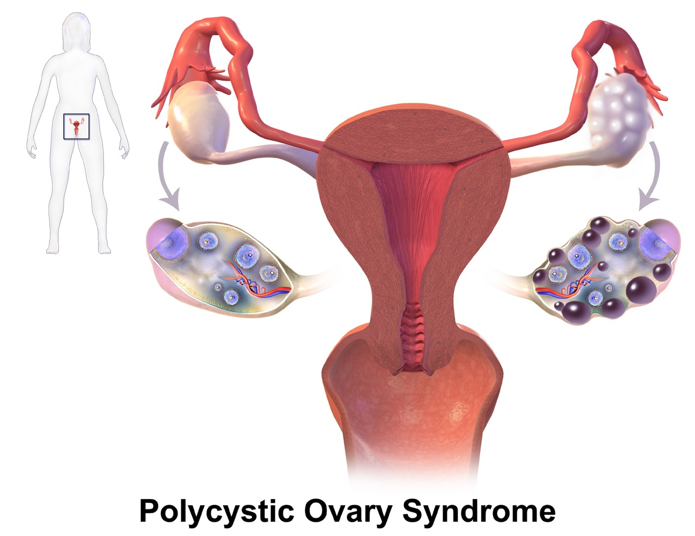
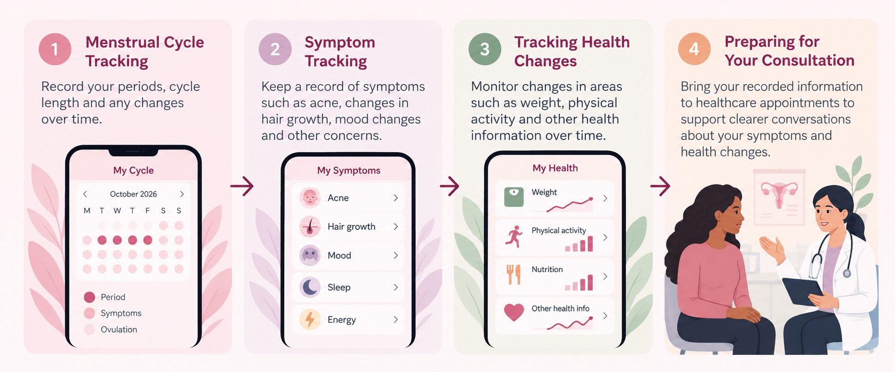

Polyendocrine Metabolic Ovarian Syndrome (PMOS)
Polyendocrine Metabolic Ovarian Syndrome (PMOS), previously known as Polycystic Ovary Syndrome (PCOS), is a hormonal and metabolic condition that can affect menstrual cycles, ovulation and other aspects of health.
The name PMOS was adopted in 2026 to better reflect the broader endocrine, metabolic and ovarian features of the condition.

Image: BruceBlaus, CC BY-SA 4.0, via Wikimedia Commons
How Digital Health Can Help
PMOS can involve symptoms that change over time and affect different areas of health. Digital tools can help patients record menstrual patterns, symptoms and other health information, making it easier to organise information for healthcare consultations.

Digital tracking can help patients organise menstrual, symptom and health information before healthcare consultations.
Image: AI-generated with ChatGPT (OpenAI), 2026.
Menstrual Cycle Tracking
Digital menstrual tracking tools can help patients record cycle length, missed or irregular periods and changes over time. Keeping a structured record can make menstrual patterns easier to discuss during healthcare appointments.
Symptom Tracking
Digital health diaries can help patients record symptoms such as acne, changes in hair growth, mood changes and other concerns. Tracking these symptoms over time can help create a clearer picture of how they change and affect daily life.
Tracking Health Changes
Digital tools can help patients keep a record of changes in areas such as weight, physical activity and other health information over time. These records can support conversations with healthcare professionals about the broader metabolic aspects of PMOS.
Preparing for Healthcare Consultations
Bringing organised information about menstrual cycles, symptoms and health changes can help patients prepare for healthcare appointments. Digital records can support clearer conversations with healthcare professionals about symptoms, concerns and changes over time.
When to Seek Medical Advice
Consider speaking with a healthcare professional if menstrual cycles are persistently irregular or absent, or if symptoms such as changes in hair growth, acne or other health concerns are persistent or causing concern.
Digital health records can support these conversations, but they do not replace professional medical assessment, diagnosis or treatment.